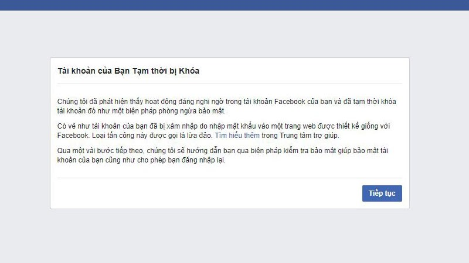

Gỡ Facebook Checkpoint":" Hướng dẫn cách mở khóa trong 1 nốt nhạc

Ty Nguyen
CEO ❤️ AhaChat. Love babies & chatbot.
Tài khoản Facebook cá nhân của bạn trong quá trình sử dụng có thể rơi vào trường hợp bị Checkpoint? Vậy Checkpoint Facebook là gì? Khi Facebook bị Checkpoint làm thế nào để mở khoá? Bài viết dưới đây Hướng dẫn bạn cách mở khoá tài khoản Facebook bị Checkpoint trong 1 nốt nhạc, giúp bạn giải đáp các thắc mắc về Checkpoint Facebook. Đừng bỏ lỡ nhé!
1. Checkpoint Facebook là gì?

Checkpoint Facebook là gì?
Checkpoint Facebook được xem là tính năng để giúp người dùng xác minh và bảo mật tài khoản Facebook cá nhân, tránh bị hacker tấn công tài khoản. Khi tài khoản Facebook của bạn được một ai đó đăng nhập từ một nơi xa lạ mà Facebook phát hiện thì lập tức tính năng Checkpoint được kích hoạt. Facebook tạo ra tính năng này để giúp bạn xác nhận xem bạn có phải là chủ nhân của tài khoản với hành động đăng nhập đáng ngờ đó không.
Tuy nhiên, có những trường hợp Checkpoint Facebook xảy ra chính với chủ nhân của tài khoản Facebook đó khi chẳng may xảy ra những hoạt động đáng ngờ. Chính vì vậy tính năng Checkpoint Facebook cũng được xem là một trở ngại. Nếu chẳng may tài khoản Facebook của bạn bị Checkpoint thì cũng đừng lo lắng quá, bạn hãy làm theo những yêu cầu mà Facebook đưa ra và kiên nhẫn chờ đợi thì tài khoản của bạn sẽ được mở lại.
2. Hướng dẫn cách mở khóa tài khoản Facebook bị Checkpoint trong 1 nốt nhạc
Facebook Checkpoint: Hướng dẫn cách mở khóa trong 1 nốt nhạc
Tuỳ vào dạng Checkpoint mà tài khoản Facebook của bạn gặp phải thì sẽ có cách mở khác nhau. Các dạng Checkpoint hiện nay:
- Checkpoint hình ảnh: xác minh danh tính tài khoản Facebook của bạn bằng cách chọn 5/7 hình ảnh bạn bè.
- Checkpoint số điện thoại: xác minh tài khoản bằng cách nhập mã xác nhận Facebook gửi đến số điện thoại bạn đã đăng ký.
- Checkpoint câu hỏi bí mật: xác minh tài khoản bằng cách nhập đúng câu hỏi bí mật khi tạo tài khoản.
- Checkpoint ngày sinh: xác minh tài khoản Facebook bằng cách chọn đúng ngày sinh đã đặt khi tạo tài khoản.
- Checkpoint 72h: xác minh danh tính tài khoản Facebook bằng cách gửi một bức ảnh chụp giấy tờ tùy thân.
Dưới đây chúng tôi sẽ hướng dẫn bạn cách mở khoá tài khoản Facebook bị Checkpoint với 2 trường hợp phổ biến nhất là Checkpoint bằng hình ảnh và Checkpoint 72h.
2.1. Cách mở khoá tài khoản Facebook bằng cách xác minh số điện thoại đã đăng ký
Mở khoá tài khoản Facebook bị checkpoint bằng cách xác minh số điện thoại
Với cách mở khoá tài khoản Facebook bị checkpoint bằng cách xác minh số điện thoại, bạn thực hiện theo các bước sau:
Bước 1: Khi tài khoản Facebook của bạn đã bị khoá, bạn đăng nhập vào sẽ thấy thông báo tài khoản bị khoá. Lúc này, bạn nhấn Tiếp tục để bắt đầu xác minh tài khoản bị checkpoint.
Bước 2: Sau khi bấm vào tiếp tục, facebook sẽ yêu cầu bạn nhập mã bảo mật như hình dưới, bạn nhập xong mã đó thì nhấn vào Submit.
Bước 3: Sau đó, bạn nhập số điện thoại bạn đã đăng ký khi tạo tài khoản Facebook đang bị Checkpoint đó và tích chọn vào ô gửi tin nhắn cho tôi. Tiếp đến, bạn bấm chọn Tiếp tục.
Bước 4: Lúc này, bạn kiểm tra điện thoại của bạn sẽ có mã xác nhận gửi đến, bạn nhập mã này vào và chờ đợi để tài khoản Facebook của bạn được mở lại bình thường.
2.2. Cách mở khoá tài khoản Facebook bị Checkpoint 72h bằng giấy tờ tuỳ thân
Mở khoá tài khoản Facebook bị checkpoint 72h
Để mở khoá tài khoản Facebook bị Checkpoint 72h bằng giấy tờ tuỳ thân, bạn làm theo các bước sau:
Bước 1: Đầu tiên, bạn cần phải chuẩn bị ảnh chụp 2 mặt của Chứng minh thư nhân dân hoặc giấy phép lái xe dưới dạng Gif hoặc JPG. Yêu cầu thông tin của giấy tờ tùy thân cần phải khớp với thông tin trên tài khoản Facebook bị Checkpoint.
Bước 2: Tiếp theo, bạn cần phải fake ip sang US, UK, China hoặc India đều được. Nhưng bạn nên chọn ip US vì Facebook vẫn khá tin tưởng ip từ US. Các bước fake ip như sau:
- Bạn vào cửa hàng Chrome trên máy tính của bạn gõ tìm kiếm “hola” tải tiện ích ứng dụng Hola Free VPN Proxy Unblocker.
- Sau khi hiện ra tiện ích Hola, bạn ấn vào Thêm vào Chrome.
- Sau khi cài đặt xong tiện ích Hola, biểu tượng Hola sẽ xuất hiện ở góc trái màn hình trên thanh tìm kiếm.
- Lúc này, bạn đã có thể fake ip sang các quốc gia khác mà bạn muốn
Bước 3: Sau khi đã fake ip, bạn bấm vào đường link
https://www.facebook.com/help/contact/logout?id=237843336274237
để điền đầy đủ thông tin cần thiết của tài khoản Facebook đó.
Tiếp đến, bạn tải file giấy tờ tùy thân và bấm Duyệt.
Cuối cùng, bạn tick vào ô Tôi đồng ý sau đó nhấn Gửi để gửi đến Facebook xác minh tài khoản bị checkpoint của bạn bằng giấy tờ tùy thân.
Giờ bạn chỉ cần chờ đợi Facebook gửi thông báo đến email bạn đã đăng ký để lấy lại tài khoản Facebook bị Checkpoint.
Với những chia sẻ từ bài viết trên đây hy vọng đã giúp bạn biết cách mở khoá tài khoản Facebook bị Checkpoint nhanh trong 1 nốt nhạc. Trong quá trình thực hiện, nếu bạn gặp khó khăn ở trường hợp nào thì đừng ngần ngại để lại bình luận ngay mục dưới đây để chúng tôi hỗ trợ bạn nhé. Chúc bạn sớm khôi phục được tài khoản Facebook của mình.